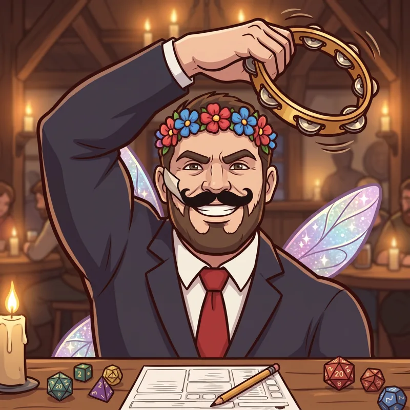

Vavhal Gavone

 Mage
Mage
Vavhal Gavone, the Unmistakable
After their quest: Vavhal Gavone, of the Thousand Faces
Eight feet of goliath, fairy wings and a tambourine. Swears nobody recognizes him.
Ability
Dresses up as whatever the region needs: always counts as a favored class
How to get them
Shows up as a recruit candidate at the Inn.
Quest
Vavhal and the perfect disguise · Argenen
How it ends · Show spoiler
Vavhal dressed up as the Governor. Nobody noticed the difference. Not even the Governor.
Party names
Show spoiler
- Private Show: Vavhal Gavone + Bibi
- Seen and Unseen: Vavhal Gavone + Elioni
- Grand Entrances: Vavhal Gavone + Varis
Chronicles
They unlock in-game as they level up. Each gives 1 Rune the first time you read it.
Chapter 1 (Lv 1) · Show spoiler
The troupe
Vavhal Gavone grew up in a traveling dance and theater troupe, among curtains, wigs and applause. There he learned the most important lesson of his life: center stage is the best place in the world. He is an extraordinary dancer. He keeps the beat with castanets and a pair of boots he made himself, with metal heels and toes, to tap-dance so hard the boards shake. When Vavhal walks into a room, you notice. Always. That is exactly the problem.
Chapter 2 (Lv 5) · Show spoiler
The perfect disguise (almost)
Vavhal's disguises are works of art: invisible seams, flawless wigs, voices rehearsed for weeks. The problem is what goes inside: a gray goliath well over seven feet tall. He has dressed up as a fairy, with wings and a tambourine. As a nun. As a bush. As a lost child. Nobody has ever caught him, according to him. According to everyone else, they always recognized him, from far away and before he opened his mouth. Nobody dares to tell him. He looks so happy.
Chapter 3 (after their quest) · Show spoiler
The Governor
In Argenen, Vavhal dressed up as the Governor. For the first time in his life, nobody looked at him: they looked at the office. And instead of dancing on the hall table, he did something strange. He signed the opening of the granaries, forgave a few debts and left without anyone knowing he had been there. He discovered there is something better than applause: seeing others do well. Since that day he is no longer the Unmistakable: he is Vavhal Gavone, of the Thousand Faces.
Chapter 4 (Lv 15) · Show spoiler
Counting heads
Vavhal doesn't talk about it much, but not long ago he lost his friends in a fight. Since then, before every expedition he counts his party. Twice. He checks the backpacks, the boots and the sky. Still, he is the cheeriest soul at the Inn: he greets everyone by name, thanks every meal and never interrupts anyone, except to tap-dance. And he dresses up as whatever the party needs. If the region calls for a warrior, Vavhal is a warrior. More or less.
Chapter 5 (Lv 20) · Show spoiler
The rhythm
One night at the Inn, TomTom asked for music. Everyone looked at Vavhal, waiting for the big number. But Vavhal stayed in a corner, keeping the beat with his castanets and boots while the others danced. Ragnuk sang off-key, Bibi twirled, Enrique got lost on the dance floor. Nobody applauded him. It was the best show of his life. The stage is still his favorite place, but now he likes it best when it's full of friends.
Their player

This character is played by a real player from the tabletop RPG campaign that inspired the game.